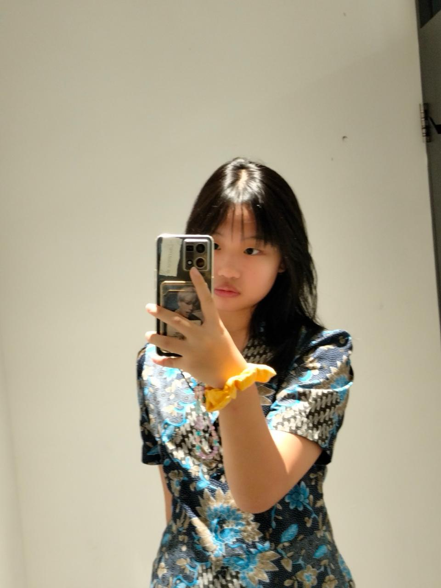
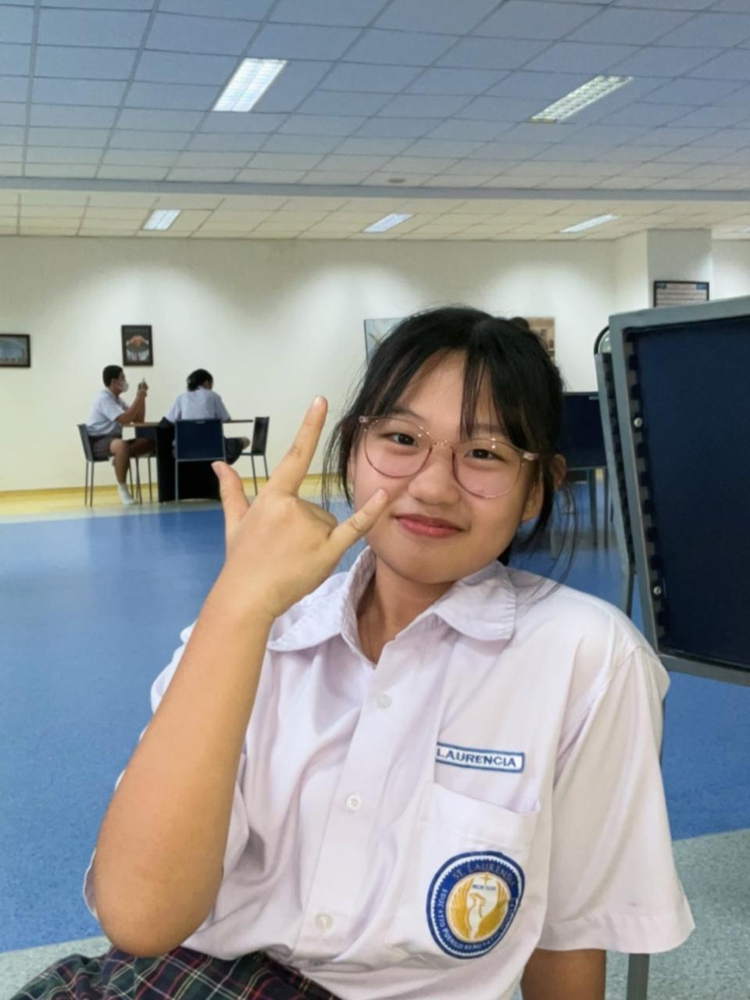

Panggil aku Lauren! Aku adalah siswa kelas 9 dari Santa Laurensia Suvarna Sutera. Saya suka pelajaran IPA dan Mandarin. Sebagai seorang murid, saya selalu ingin mendapatkan nilai yang bagus, maka dari itu saya akan berusaha dan tidak bermalas malasan.
Cita cita ku adalah menjadi seorang apoteker, makanya aku akan mencoba untuk lebih giat dalam belajar dan mencoba hal yang baru. Dalam hal ini, aku cukup mampu dan memiliki potensi dalam berbicara bahasa asing seperti english dan mandarin.
